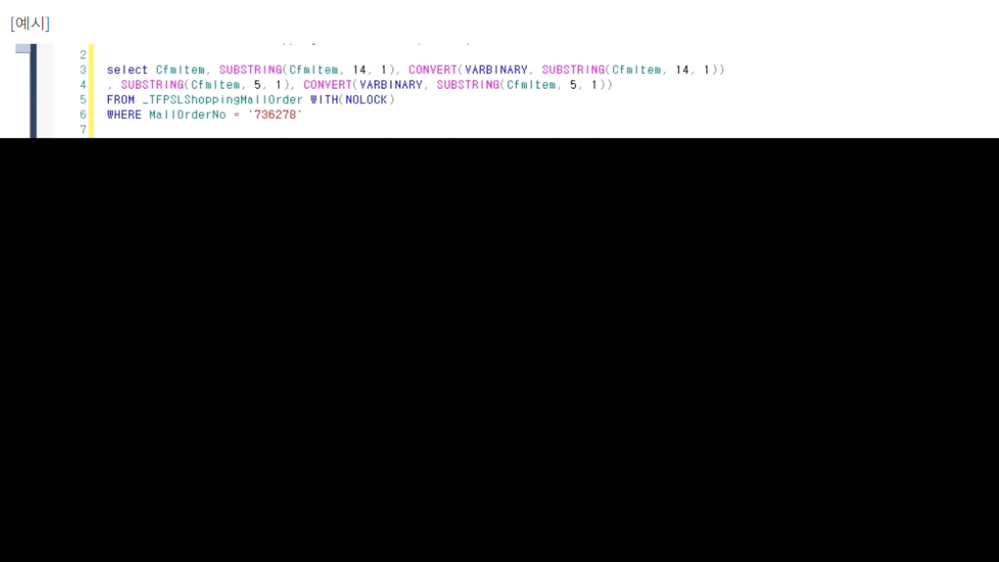

Unexpected token in JSON at position 71908
[오류예시]
Unexpected token in JSON at position 71908 오류가 발생하고 있습니다.
해당 오류는 조회하는 데이터에 JSON에서 허용하지 않는 특수문자를 포함하고 있어
JSON 변환 시 발생하는 오류입니다.
이와 같은 오류 발생 시 처리방법입니다.
출처: \<https://kdc.ksystem.co.kr/WebDev>
--실행문 예시
select CfmItem, SUBSTRING(CfmItem, 14, 1), CONVERT(VARBINARY, SUBSTRING(CfmItem, 14, 1))
, SUBSTRING(CfmItem, 5, 1), CONVERT(VARBINARY, SUBSTRING(CfmItem, 5, 1))
FROM _TFPSLShoppingMallOrder WITH(NOLOCK)
WHERE MallOrderNo = '736278'
select CfmItem, SUBSTRING(CfmItem, 14, 1), CONVERT(VARBINARY, SUBSTRING(CfmItem, 14, 1))
, SUBSTRING(CfmItem, 5, 1), CONVERT(VARBINARY, SUBSTRING(CfmItem, 5, 1))
FROM _TFPSLShoppingMallOrder WITH(NOLOCK)
WHERE MallOrderNo = '736279'
[해결방법]
1) 조회 시 프로파일러로 실행문을 잡아 테이블 데이터에 문제가 되는 특수문자가 있다면 해당 문자를 제거해줍니다.
2) 위 방법으로 원인을 파악하기 어려운 경우, 다음 실행문을 활용하여 문제가 되는 문자를 찾으실 수 있습니다.
SQL복사
--실행문 예시selectCfmItem, SUBSTRING(CfmItem, 14, 1), CONVERT(VARBINARY, SUBSTRING(CfmItem, 14, 1))\ , SUBSTRING(CfmItem, 5, 1), CONVERT(VARBINARY, SUBSTRING(CfmItem, 5, 1))\ FROM_TFPSLShoppingMallOrder WITH(NOLOCK)\ WHEREMallOrderNo = '736278'selectCfmItem, SUBSTRING(CfmItem, 14, 1), CONVERT(VARBINARY, SUBSTRING(CfmItem, 14, 1))\ , SUBSTRING(CfmItem, 5, 1), CONVERT(VARBINARY, SUBSTRING(CfmItem, 5, 1))\ FROM_TFPSLShoppingMallOrder WITH(NOLOCK)\ WHEREMallOrderNo = '736279'
--실행문 예시
select CfmItem, SUBSTRING(CfmItem, 14, 1), CONVERT(VARBINARY, SUBSTRING(CfmItem, 14, 1))
, SUBSTRING(CfmItem, 5, 1), CONVERT(VARBINARY, SUBSTRING(CfmItem, 5, 1))
FROM _TFPSLShoppingMallOrder WITH(NOLOCK)
WHERE MallOrderNo = '736278'
select CfmItem, SUBSTRING(CfmItem, 14, 1), CONVERT(VARBINARY, SUBSTRING(CfmItem, 14, 1))
, SUBSTRING(CfmItem, 5, 1), CONVERT(VARBINARY, SUBSTRING(CfmItem, 5, 1))
FROM _TFPSLShoppingMallOrder WITH(NOLOCK)
WHERE MallOrderNo = '736279'
출처: \<https://kdc.ksystem.co.kr/WebDev>
